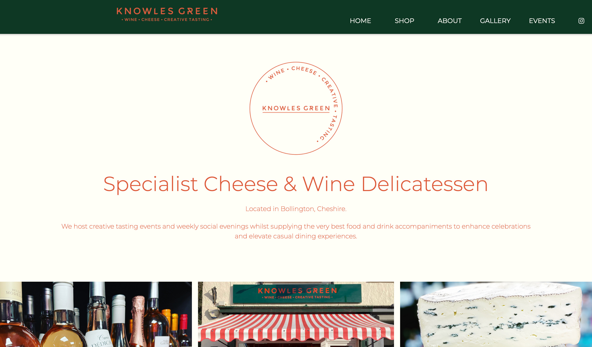
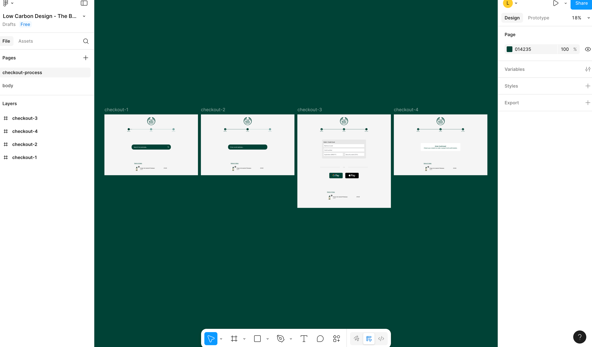
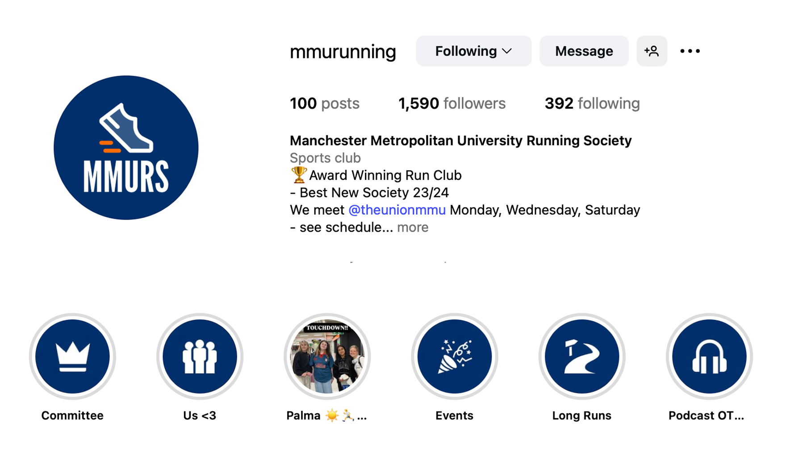
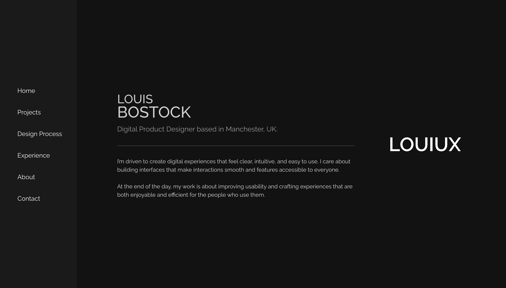

Work
Projects
A selection of UX design and frontend development projects — from freelance client work to university briefs.

Revamped the online presence and built a new website for a boutique wine and cheese delicatessen in Cheshire. Ongoing freelance client since 2023.

Designed and built a hot-pink, scrapbook-inspired portfolio website for a Fashion Promotion student, reflecting her bold editorial style.

Led a second-year project to redesign a website using sustainable, low-carbon design principles — reducing data transfer and improving performance.

Progressed from Social Media Manager to Chair of the university running club, overseeing all branding, design output, and communications.

Designed a narrative website to present insights and stories from an exploration of Barcelona's culture and history.

Designed and built this portfolio from scratch — from hand-drawn sketches through to the final coded product. Continually iterated.